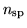

void initialize(array& data, char *tclname) void initialize_offdiag(sparse_mat& interact, char *nm, int size)
This module provides routines for initialising the model state variables. initalize provides a means of initialising an array (or iarray) using a TCL handle tclname. The Ecolab model arrays are defined by the following code:
density = iarray(sum(nsp)); initialize( density,"density"); repro_rate = array(density.size); initialize( repro_rate,"repro_rate"); mutation = array(density.size); initialize( mutation,"mutation"); interaction = sparse_mat(density.size); initialize( interaction.diag, "interaction(diag)" );
Variables of type
array or iarray may be initialised by assigning the
following array elements:
